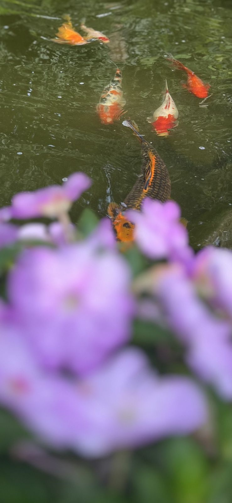
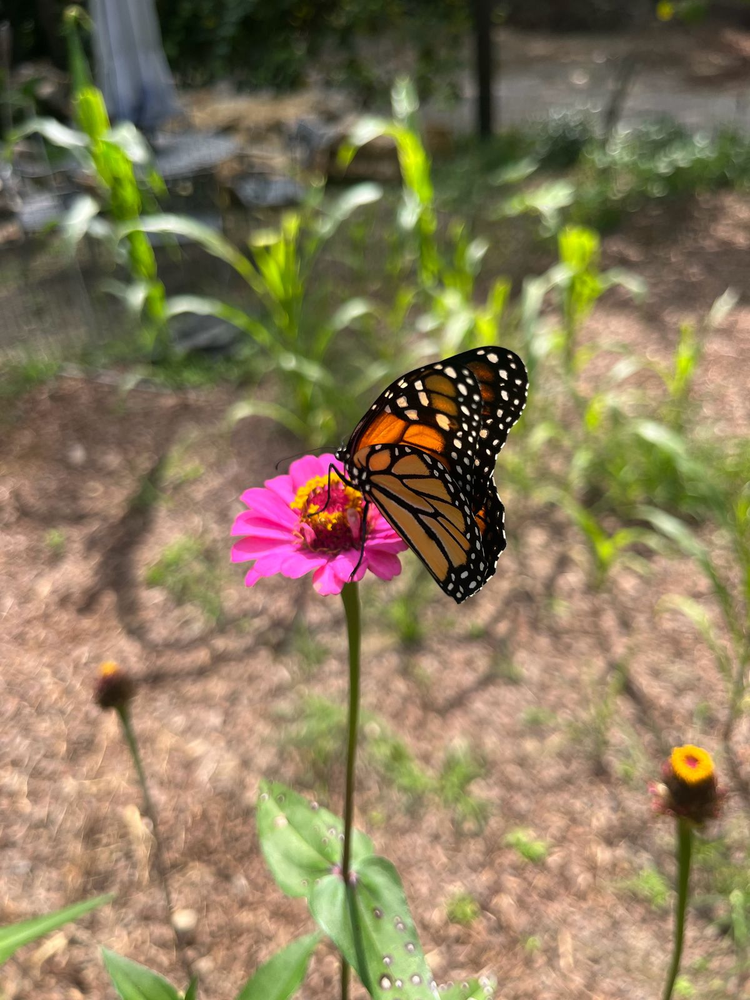
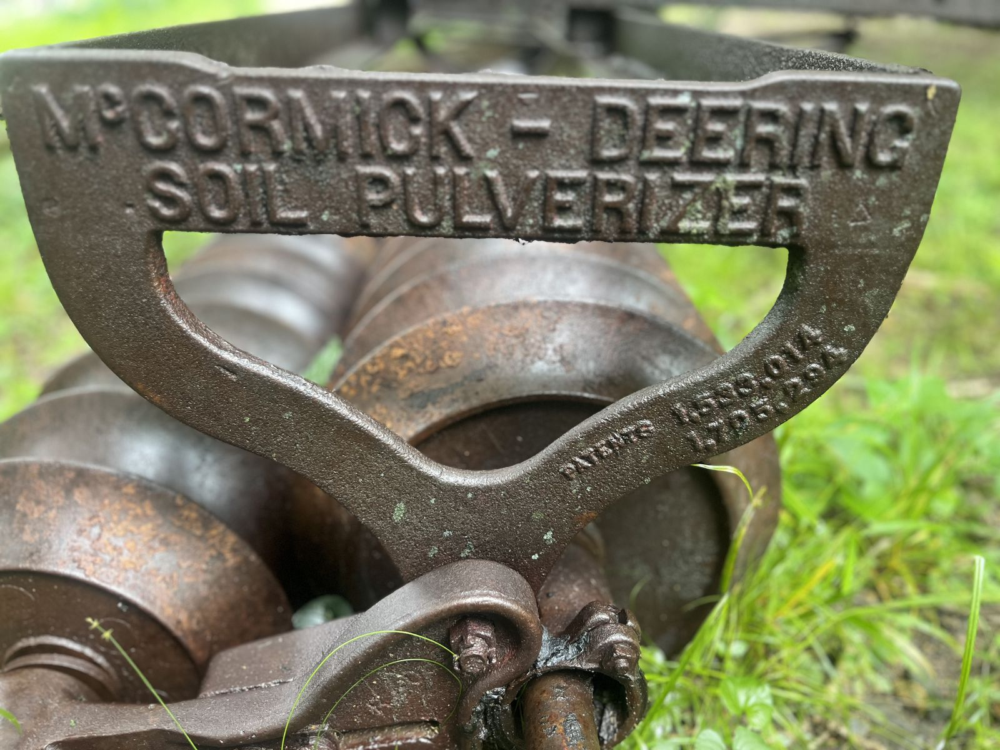
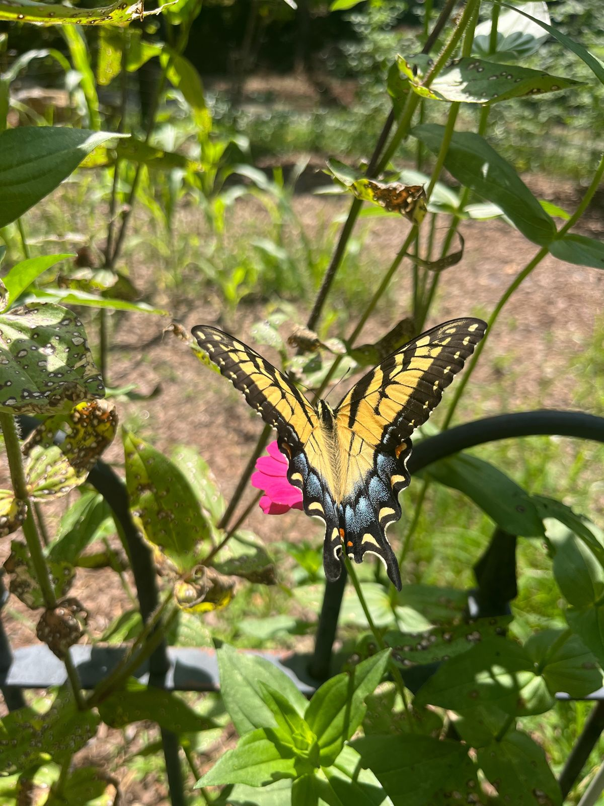

Jason’s own work
Paintings & Photography
Away from the keyboard, Jason paints, draws, and takes pictures.
Photography




Photography by Jason Collier
Jason’s own work
Away from the keyboard, Jason paints, draws, and takes pictures.




Photography by Jason Collier